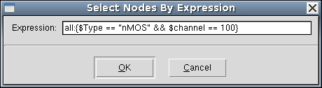
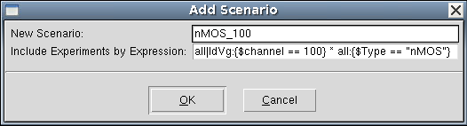
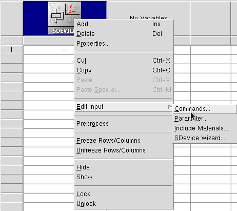
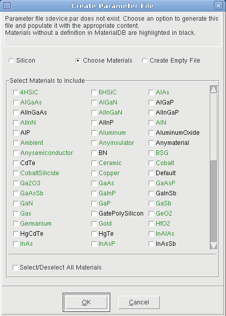
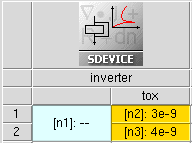
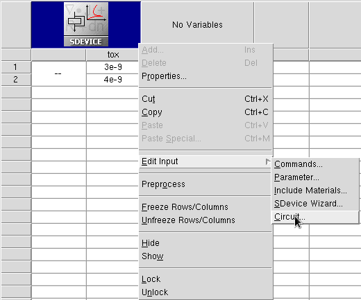

Sentaurus Workbench
7. Advanced Features
7.1 Node Selection by Expression
7.2 Customizing Tool Input File
7.3 Files Associated With Sentaurus Workbench Simulation Nodes
7.4 Runtime Editing Mode
Objectives
- To provide deeper insight into the advanced features of Sentaurus Workbench.
7.1 Node Selection by Expression
For large design-of-experiments projects, selecting a restricted set of nodes by a given criterion might be a tedious task. This is where node selection by expression can help.
The project Applications_Library/GettingStarted/sdevice/MultiValleyMOS demonstrates how to use node selection by expressions.
To select nodes by an expression:
- Open the project.
- Choose Nodes > Select >
By Expression.
The Select Nodes By Expression dialog box opens. - Enter the selection expression, as shown here.

- Click OK.
- Choose Nodes > Extend Selection To >
Root.
You should see the corresponding experiments are highlighted, as shown in Figure 1.
{kind=link}
Figure 1. Selected experiments after being extended to roots. (Click image for full-size view.)
The general expression template consists of <scenario_name>:{<expression>}, where <scenario_name> represents the name of the experimental scenario ("all", for example), and <expression> consists of a single or multiple logical expressions.
The following examples demonstrate a variety of cases:
- Select all nodes in scenario "all" with the stress parameter value > 1:
all:{$stress > 1} - Select nodes in scenario "all" for the channel orientation != <100>:
all:{$channel != 100} - Inside a single expression, the Boolean logical AND operand (&&) is supported.
Select all nodes in scenario "all" with stress > 1 and the channel orientation <100>:
all:{$stress > 1 && $channel == 100} - Instead of <scenario_name>, the tool label can be used as follows:
sde:{$stress > 1} - Combine a scenario name with a tool label:
all|IdVg:{$channel == 100} - Superposition of expressions using binary operators is possible, for example:
– AND (intersection) operation:
all|IdVg:{$channel == 100} * all:{$Type == "nMOS"}– OR (union) operation:
all|IdVg:{$channel == 100} + all:{$Type == "nMOS"}– Difference operation:
all|IdVg:{$channel == 100} - all:{$Type == "nMOS"}
A similar method can be used to add selected experiments by expression to a new scenario.

Figure 2. Add Scenario dialog box with experiments to be included by expression.
7.2 Customizing Tool Input File
All tool inputs can be accessed from the graphical user interface of Sentaurus Workbench by either choosing Tool > Edit Input, or right-clicking a tool icon and choosing Edit Input.
The corresponding tool inputs in the menu are tool oriented, and their definitions are specified in the global tooldb.tcl file, which is accessible by choosing Edit > Tool DB > Global.
For example, as shown in Figure 3, right-click the Sentaurus Device tool icon, choose Edit Input, and then choose one of the available options.

Figure 3. Options of Edit Input for Sentaurus Device.
Each Sentaurus Device tool instance uses a unique command file. On the other hand, by default, all Sentaurus Device tool instances in a project share the same material parameter file sdevice.par.
If multiple Sentaurus Device instances are used in a project, then Sentaurus Workbench also allows individual Sentaurus Device parameter files. To activate an individual parameter file, you must indicate it in the corresponding tool properties, as shown in Figure 4.
{kind=link}
Figure 4. Diagram showing customization of individual parameter files for multiple Sentaurus Device tools in a project. (Click image for full-size view.)
To create a project from the beginning and to include different material parameters in your parameter file that does not yet exist:
- Choose Tool > Edit Input > Parameter.
The Create Parameter File dialog box opens. - Select Choose Materials to see the list of supported materials.
Materials shown in green exist in the Sentaurus Device material database (MaterialDB), supplied with the release.

- Select the materials required.
- Click OK.
The corresponding material parameter files will be copied to the current project directory and referred to in the actual parameter file, as shown in the following example (a warning message is displayed for a non-existent material):
#define ParFileDir .
Material="4HSiC" {
#includeext "ParFileDir/4HSiC.par"
}
Material="HgTe" {
# WARNING: no parameter file found for material HgTe in the material database
}
As already mentioned, the input listed in the Edit Input submenu of each tool is defined in the global tooldb.tcl.
If you need to modify the submenu (input list), then you can customize it by introducing the necessary corrections in a local project gtooldb.tcl file. The following example shows how you can do this.
Look at the Applications_Library/GettingStarted/swb/HSpice_bsim4 project, which consists of one Sentaurus Device tool instance and one project parameter tox (see Figure 5).

Figure 5. Example showing how to customize the input file list for the Sentaurus Device tool instance.
In this project, the CMOS inverter behavior is simulated on a circuit level using the Synopsys PrimeSim™ HSPICE® BSIM4 circuit model. The BSIM4 model parameters for the NMOS and PMOS transistors are loaded from the external file circuit.scf, where the parameter tox is referred.
To ensure that this file can be parameterized, the local project gtooldb.tcl file has been modified.
The first three commands add a new object (circuit) to the file type list, define its standard file extension (scf), and add the new object to the Sentaurus Device input file list:
set WB_tool(file_types) [list circuit] set WB_tool(circuit,ext) scf set WB_tool(sdevice,input) [list commands parameter config grid doping edit \ tdr circuit]
The next four commands specify the full circuit file name, which must be opened when selecting the corresponding item from the Edit Input submenu, select the label in the tool Edit Input submenu, activate the possibility to parameterize this file, and indicate that a default text editor must be used to edit this input:
set WB_tool(sdevice,input,circuit,file) circuit.scf set WB_tool(sdevice,input,circuit,label) "Circuit..." set WB_tool(sdevice,input,circuit,parametrized) 1 set WB_tool(sdevice,input,circuit,editor) text
This makes it possible for:
- The circuit file to appear in the list of Sentaurus Device inputs
- The circuit.scf file to be parameterized

Figure 6. Modified input file list for Sentaurus Device, introducing the possibility to edit the circuit file description (compare with Figure 3).
Preprocess the project to see how the @tox@ statement is replaced by its actual values.
At the end of the gtooldb.tcl file of the project, you can see an additional command, instructing Sentaurus Workbench that the prologue commands must be executed before the execution of a Sentaurus Device node:
set WB_tool(sdevice,prologue) { catch {os_mkdir_rel n@node@ @nodedirpath@}; \
os_cp @nodedirpath@/pp@node@_des.scf @nodedirpath@/n@node@/pp@node@_des.scf}
The purpose of these commands is to create a subdirectory in the project directory and to copy a preprocessed circuit file there. This is performed to overcome a Sentaurus Device limitation, which is always to read the first-found circuit file in the directory specified using the SPICEPath keyword.
Correspondingly, Sentaurus Device is instructed to read the circuit file from a specific "./n@node@" path to avoid any misuse of the circuit file:
File {
...
SPICEPath= "./n@node@"
}
7.3 Files Associated With Sentaurus Workbench Simulation Nodes
Primary input files – the input files that you write and that, in general, contain variables – are named <tool_label>_<tool_acronym>.cmd. For each tool, a default tool_label is assigned to a tool instance. You can specify your own tool_label in the Tool Properties dialog box. The name tool_acronym is assigned automatically to the generic input file.
Table 1 lists the most commonly used tools, their default tool label, and tool acronym.
| Tool | Default tool label | Tool acronym |
|---|---|---|
| Sentaurus Process | sprocess | fps |
| Sentaurus Topography | sptopo, sptopo3d | tpg, t3d |
| Sentaurus Interconnect | sinterconnect | sis |
| Sentaurus Structure Editor | sde | dvs |
| Sentaurus Lithography | slitho | slt |
| Sentaurus Process Explorer | spx | spx |
| Sentaurus Mesh | snmesh | msh |
| Sentaurus Device | sdevice | des |
| Sentaurus Band Structure | sband | epm* |
| Sentaurus Device Electromagnetic Wave Solver | emw | eml |
| Sentaurus Device QTX (Subband-BTE solver) | sbte | bte |
| Inspect | inspect | ins |
| Sentaurus Visual | svisual | vis |
| Sentaurus Data Explorer | tdx | tdx* |
| C Shell | cshell | csh |
| Bash Shell | bash | bsh |
| Tcl Shell | gtclsh | tcl |
* Sentaurus Band Structure and Sentaurus Data Explorer use input files with the extension .tcl.
The primary input files with their default tool labels are, for example, sprocess_fps.cmd and sdevice_des.cmd. If there are multiple instances of the same tool, then a number is added automatically to the default tool label (for example, sprocess1_fps.cmd).
A simulation project is launched in two steps:
- First, the Sentaurus Workbench preprocessor generates parameterized input files from the generic input files. This means that, for each value a variable or parameter can assume, a unique simulator input file is generated.
- Second, for each unique simulator input, the appropriate simulator is launched.
The simulator is launched using the utility gjob, which produces two output files per simulation node: n@node@_<tool_acronym>.job and n@node@_sge.err. Information about the preprocessing of a project can be found in the preprocessor.log file.
The simulator output files are named n@node@_<tool_acronym>.<extension> and pp@node@_<tool_acronym>.<extension>. For example, all the files n3_fps.<extension> belong to node number 3 that performs a process simulation using Sentaurus Process.
Table 2 lists the most commonly generated files belonging to simulation nodes. These files are listed in the Node Explorer.
| File extension | Description | Remarks |
|---|---|---|
| cmd | Preprocessed simulation input command file | Sentaurus Workbench variables are replaced by their actual values. |
| err | File containing simulator error messages | Error messages generated by Tcl procedures or licensing can be found here as well. |
| sge.err | Error messages from gjob | Contains error messages from gsub if the job failed. |
| job | Information from gjob | Contains information from the preprocessor and the simulation job submission. Look here for error messages if a simulation node is not executed. |
| out, log | Simulation log file | Information about the progress of the simulation. |
| par | Preprocessed parameter file | Used in Sentaurus Device and Sentaurus Device Electromagnetic Wave Solver. |
| plt | Device simulation current file | Contains solution variables at device terminals (such as voltages and currents). |
| sta | Status of the simulation | The status is indicated by the color of the simulation node, which also contains information about the execution host. |
| tdr | The structure with simulation results | Contains field data such as doping distribution and electrostatic potential. |
For some extensions, there can be more than one file, depending on the simulation task. Additional files are written by the simulators if users specify them in the simulator input file.
7.4 Runtime Editing Mode
A project can be configured to have different runtime editing modes:
- In the Editable mode (default):
- Sentaurus Workbench deactivates all safeguards.
- Users have maximum flexibility when running projects.
- Users are wholly responsible for maintaining project consistency.
- In the Locked mode:
- Sentaurus Workbench handles projects as in earlier releases (before K-2015.06).
- Sentaurus Workbench activates safeguards to keep overall project consistency.
The Editable mode is the default for a newly created project. For projects created with earlier Sentaurus Workbench releases, the mode is taken according to the preferences.
To change the runtime editing mode:
- Choose Edit > Preferences, or press the F12 key.
- In the SWB Preferences dialog box, expand Project > Runtime Editing Mode > Default Mode.
- Change the mode.
- Click Apply.
For an already loaded project, to change the runtime editing mode, you can either:
- Choose Project > Runtime Editing Mode > Locked.
- Choose Project > Runtime Editing Mode > Editable.
Every time a project is loaded, its mode is taken according to the setup from the previous session.
The runtime editing mode is shown in the title bar of the main window of Sentaurus Workbench, where the full project name is shown.
Table 3 summarizes the differences between the two modes in terms of user ability to control the execution of project nodes.
| Running project criteria | Editable mode | Locked mode |
|---|---|---|
| Running project is locked for changes. | No | Yes |
| Automatic checks of project consistency, file timestamps, and execution dependencies. | No | Yes |
| Modifications to tool input files on a node level are allowed. | Yes | No |
| Nodes are forced to be preprocessed when they are run. | Yes | No |
| Modifications to tool input files and tool database files are allowed. | Yes | No |
| Parameterization table accepts changes: 1. Add or remove tools, parameters, and variables. 2. Add or remove experiments or parameter values. 3. Change a parameter value on a node. |
Yes | No |
| Modifications can remove or affect already running nodes. | No | No |
| Preprocessing the entire project or selected nodes is allowed. | Yes | No |
| Adding additional nodes to run, or terminating a project or nodes, is allowed. | Yes | Yes |
When you run a project in Editable mode, the Run Project dialog box opens (see Figure 7).

Figure 7. Run Project dialog box when project is in Editable mode.
By default, the Preprocess, then run option is selected, which instructs Sentaurus Workbench to preprocess the selected nodes before the execution. This ensures clean nodes are preprocessed before being run. If all nodes are already preprocessed, select the Just run, do not preprocess option to save time when preprocessing.
To preprocess or not preprocess nodes before they are run can be changed in the preferences as follows:
- Choose Edit > Preferences, or press the F12 key.
- In the SWB Preferences dialog box, expand Project > Runtime Editing Mode > Settings for Editable Mode > How to run nodes by default.
- Change the value.
- Click Apply.
Copyright © 2022 Synopsys, Inc. All rights reserved.